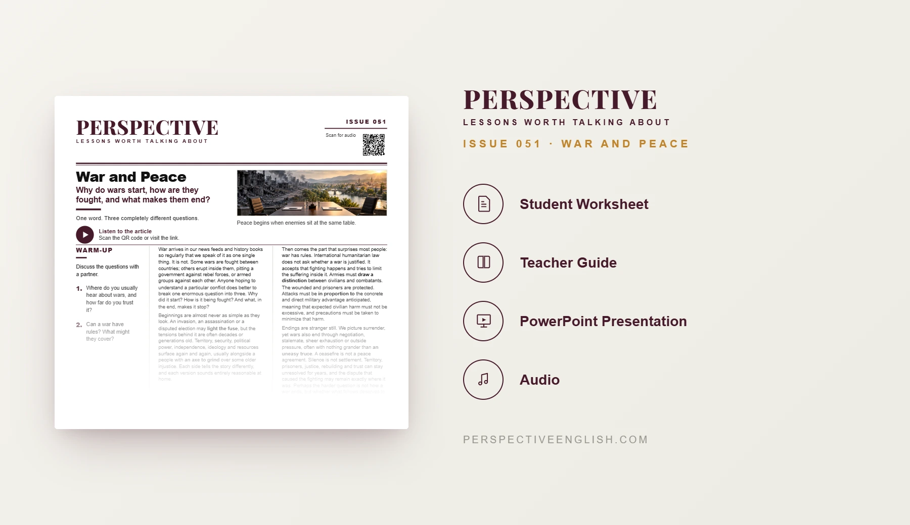

ISSUE 051
War and Peace ESL Lesson
Why do wars start, how are they fought, and what makes them end?
An advanced C1–C2 ESL lesson examining why wars begin, how international law attempts to limit suffering, and why ending the fighting is not the same as achieving lasting peace.
CHOOSE YOUR LEVEL
Also available in Collection 10, featuring Issues 051–055.
LESSON PREVIEW

ABOUT THIS LESSON
About This War and Peace ESL Lesson
War is often discussed as a single event, but understanding any conflict requires separating three questions: why it starts, how it is fought, and what brings it to an end. This advanced C1–C2 ESL lesson examines the deeper grievances behind wars and the immediate events that may ignite them.
Students explore the distinction between whether a war is justified and how it is conducted. They examine international humanitarian law, including the protection of civilians and prisoners, proportionality, and the precautions required to limit civilian harm.
The lesson then challenges students to broker a peace deal over a disputed border valley, defend their compromises in a role-play, and consider whether a ceasefire can truly resolve the causes of conflict. Advanced expressions and an opinion-writing task deepen the discussion.
FROM THE ARTICLE
WHAT'S INCLUDED
What's Included in War and Peace?
- Magazine-style C1–C2 ESL student worksheet
- Advanced reading and matching audio examining the causes of war, humanitarian law and the challenges of lasting peace
- Five expressions: light the fuse, an axe to grind, draw a distinction, in proportion to and an uneasy truce
- Five true-or-false questions testing what the article states or implies
- Five discussion questions about the causes of conflict, the rules of war, ceasefires and responsibilities after war
- You Broker the Deal: make five difficult decisions in a border-valley peace negotiation and explain who will object
- Language in Context: complete five sentences using the advanced expressions
- Speaking challenge: defend or challenge a signed peace deal from the perspectives of a mediator and a valley resident
- 200–250 word opinion-writing task comparing the difficulty of ending a war and building peace, addressing the strongest opposing view
- Teacher guide, complete answer key and model writing
- Ready-to-use classroom presentation
GET THE COMPLETE LESSON
Ready to Teach War and Peace?
Get the complete War and Peace ESL lesson individually, or get Issues 051–055 together in Collection 10.
Secure checkout and instant digital delivery through Payhip.